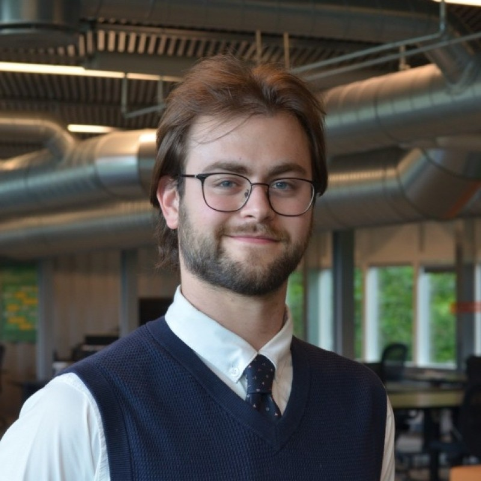

As researcher at BrainCapture, I lead the development of Large EEG Foundation Models designed to bridge the gap between deep-tech research and clinical application. My work focuses on leveraging self-supervised learning and Explainable AI (XAI) to transform "black box" neural representations into transparent, actionable insights for medical professionals. By integrating academic rigor with startup agility, I am building the scalable architecture necessary to automate EEG interpretation and democratize high-grade neurological diagnostics worldwide.